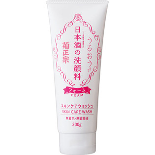

返回列表
产品名称：日本酒の洗顔料

菊正宗酒造 日本酒の洗顔料 ２００ｇ
メーカー 菊正宗酒造
JANコード 4971650800646
商品の特徴
うるおう成分配合
無着色・無鉱物油
- 成分・分量
- ＜配合成分＞
グリセリン、水、ミリスチン酸、水酸化K、パルミチン酸、ステアリン酸、ラウリン酸、PEG-32、PEG-6、ココイルメチルタウリンNa、コメ発酵液、グルタミン酸、アルギニン、ロイシン、プラセンタエキス、アルブチン、グリチルリチン酸2K、他
- 用法及び用量
- ＜使用方法＞
適量（約3cm）を手にとり、水またはぬるま湯でよく泡立ててからマッサージするように洗ってください。その後、充分にすすいでください。
※泡立てネットをご使用いただくと、よりきめ細かく弾力のあるモコモコ泡が作れます。